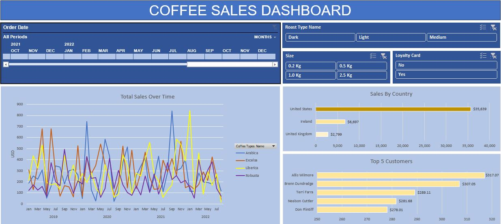

I earned my degree in economics from Collegue in 2015 and have since embarked on a dynamic career in analytics. As a dedicated and adaptable Data Analyst, I am driven by a deep passion for numbers and their ability to weave captivating narratives in tandem with a collaborative team.
My strengths lie in my sense of responsibility, creativity, and rapid learning, all underpinned by a meticulous attention to detail. I thrive in a team environment, relishing daily challenges as opportunities to continuously enhance both my technical and interpersonal skills.

The dashboard for coffee sales in Excel is a visual representation of key performance indicators (KPIs), metrics, and data related to coffee sales, designed to provide a quick and insightful overview of the business's performance in this specific area. Excel is a versatile tool for creating such dashboards, as it offers various chart types, pivot tables, and data manipulation capabilities to effectively present coffee sales data.
It is a comprehensive data analysis initiative focused on uncovering insights from a COVID-19 database. This project employs SQL Server's powerful capabilities to explore, query, and visualize COVID-19 data, providing valuable information for decision-makers, researchers, and public health professionals.

The project focuses on the critical task of data cleaning within a database containing information about households in Nashville. This project aims to ensure data accuracy, consistency, and reliability, enabling improved analytics and decision-making based on clean, high-quality data.

These Tableau projects can provide valuable insights and help businesses or individuals make data-driven decisions, whether in the context of the sharing economy (like the Airbnb's project) or financial analysis and reporting.

This dashboard provides a comprehensive snapshot of New Zealand's import and export activities for the month of April 2023. This interactive dashboard offers key insights into the country's trade performance, allowing users to make informed decisions and understand the economic landscape.